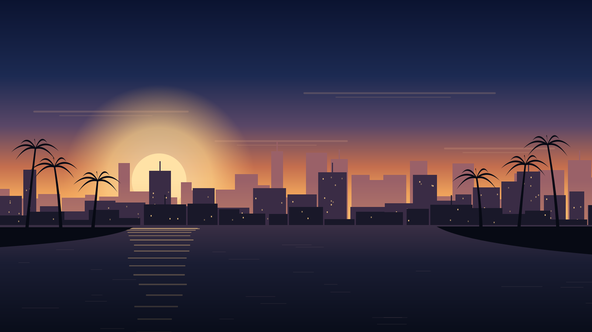
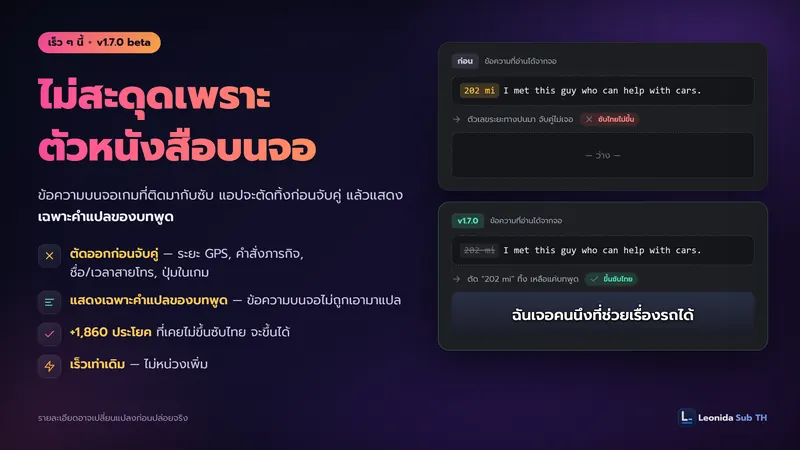
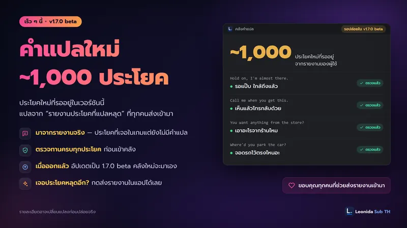
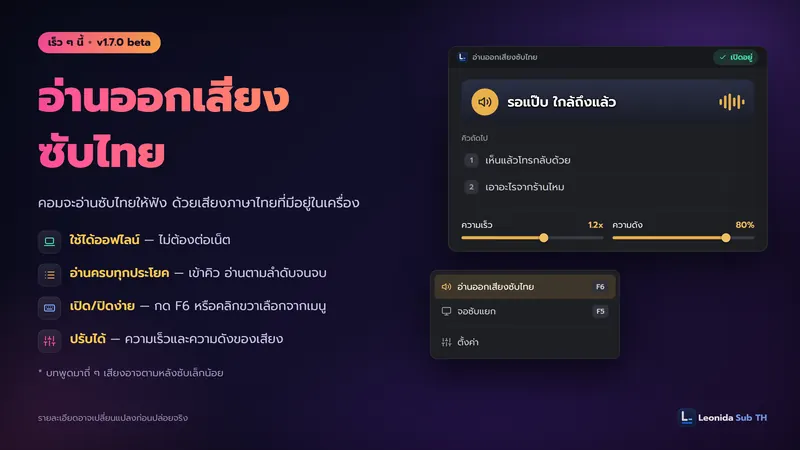
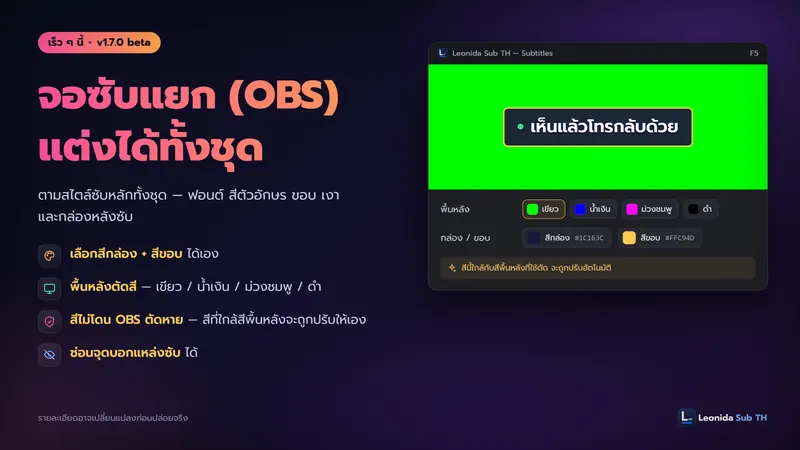
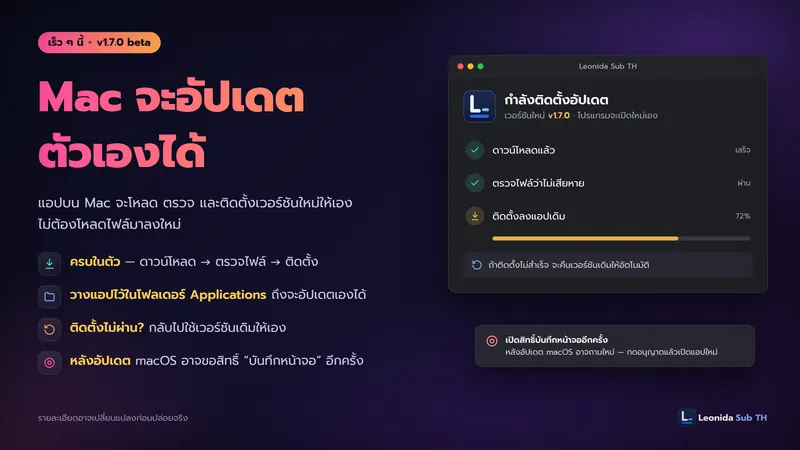
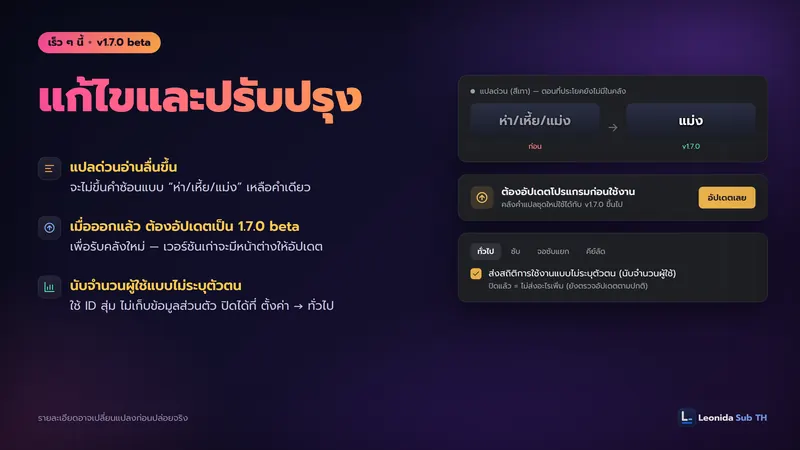

ซับไทย GTA VI แบบสด
เข้าใจเนื้อเรื่องได้ครบทุกประโยค
โปรแกรมบน Windows ที่อ่านซับภาษาอังกฤษจากหน้าจอขณะเล่น แล้วแสดงคำแปลภาษาไทยทับบนจอทันที ใช้กับภาพเกมที่แสดงบนคอมพิวเตอร์ ผ่านการ์ดแคปเจอร์กับโปรแกรมดูภาพ (เช่น OBS) หรือ PS Remote Play ไม่ต้องแก้ไฟล์เกมหรือติดตั้งมอด คำแปลจัดทำโดย AI ที่กำหนดสำนวนของ Lucia และ Jason ให้เข้ากับตัวละคร


เปิดตัวแล้ว · v1.7.1 beta
มีอะไรใหม่ใน v1.7.1 beta
คำแปลเพิ่มกว่า 12,000 ประโยค จับคู่ซับแม่นขึ้น และพูดตรงกับตัวละครมากขึ้น ถัดลงไปคือฟีเจอร์เด่นที่มีมาตั้งแต่ v1.7.0 beta แตะที่ภาพเพื่อดูขนาดใหญ่

v1.7.1 beta: คำแปลเพิ่มกว่า 12,000 ประโยค จับคู่ซับแม่นขึ้น 
ซับขึ้นครบขึ้น ตัวหนังสือบนจอเกมจะไม่ทำให้ซับหลุดอีก 
คำแปลใหม่กว่า 2,300 ประโยค จากรายงานประโยคที่แปลหลุด 
อ่านออกเสียงซับไทยด้วยเสียงในเครื่อง ใช้ได้ออฟไลน์ เปิด/ปิดด้วย F6 
จอซับแยกสำหรับ OBS แต่งได้ทั้งชุด เลือกสีพื้นหลังตัดได้ 4 สี 
แอปบน Mac อัปเดตตัวเองได้ ไม่ต้องโหลดไฟล์มาลงใหม่ 
แก้ไขและปรับปรุง เช่น แปลด่วนอ่านลื่นขึ้น


อัปเดตล่าสุด
What's new · v1.7.2 beta
อัปเดตได้จากภายในโปรแกรม โดยเปิดแอปแล้วกดปุ่ม “อัปเดตเลย”
- รองรับแอป Leonida Sub TH TV: ซับไทยลอยบนจอทีวี Android TV / Google TV โดยรับซับจากเว็บซับของโปรแกรม ดูวิธีที่ leonidasubth.com/tv
- แอปบนทีวีแสดงซับหน้าตาเดียวกับที่ตั้งในโปรแกรม: ฟอนต์ สี ขอบ เงา และพื้นหลัง แก้ที่คอมแล้วทีวีเปลี่ยนตาม
- เว็บซับเปิดให้แอปบนทีวี LG และ Samsung (รุ่นทดสอบ) รับซับได้
- Mac: หลังแอปอัปเดตตัวเอง ระบบจะถามสิทธิ์ Screen Recording ใหม่ให้ ไม่ต้องลบรายการเก่าเอง
เข้าร่วมชุมชน Discord
พื้นที่พูดคุยของผู้ใช้ Leonida Sub TH เข้าร่วมได้ฟรี
- ถามได้ทันทีเมื่อติดปัญหาสอบถามวิธีตั้งค่าหรือปัญหาที่พบระหว่างใช้งาน
- ประกาศเวอร์ชันใหม่และคำแปลใหม่ทราบทุกครั้งที่มีอัปเดตโปรแกรมหรือเพิ่มคำแปลเข้าคลัง
- รายงานประโยคที่แปลหลุดหรือแปลผิดแจ้งได้โดยตรง เพื่อแก้ไขในการอัปเดตครั้งถัดไป
- คู่มือพร้อมรูปในห้อง #วิธีใช้ดูวิธีใช้ทีละขั้นพร้อมภาพประกอบ
เริ่มใช้งานได้ใน 3 ขั้นตอน
เปิดซับไทย GTA 6 ได้โดยไม่ต้องแก้ไขไฟล์เกมหรือติดตั้งมอด โปรแกรมเพียงอ่านซับบนหน้าจอแล้วแสดงคำแปลให้
แสดงภาพเกมบนคอมพิวเตอร์
ภาพเกมต้องแสดงอยู่บนหน้าจอคอมพิวเตอร์ เช่น หน้าต่างโปรแกรมดูภาพจากการ์ดแคปเจอร์ (เช่น OBS หรือโปรแกรมของการ์ด) หรือ PS Remote Play และต้องเปิดซับภาษาอังกฤษในเกมไว้ (ในเกมไปที่ Settings → UI → Subtitles)
กด F2 เพื่อเลือกหน้าต่าง
เลือกหน้าต่างที่แสดงภาพเกม แล้วลากกรอบให้ครอบบรรทัดซับ ตั้งค่าเพียงครั้งเดียว โปรแกรมจะจดจำไว้ให้ หน้าหลักมีรายการ "ทำยังไงให้ซับขึ้น" คอยติ๊กให้เมื่อแต่ละขั้นเสร็จ และปุ่มใหญ่จะบอกสิ่งที่ต้องทำต่อเสมอ ให้ทำตามปุ่มนั้นได้เลย
ซับไทยแสดงโดยอัตโนมัติ
เมื่อตัวละครพูด ซับไทยจะแสดงซ้อนบนหน้าจอทันที เล่นต่อได้โดยไม่ต้องกดปุ่มใดเพิ่มเติม
ดูวิธีเชื่อมต่อการ์ดแคปเจอร์, PS Remote Play, OBS และวิธีติดตั้งแบบละเอียด: เลือกอุปกรณ์แล้วดูวิธีต่อสาย · เลือกการ์ดแคปเจอร์ · คู่มือ Windows · คู่มือ Mac
สนับสนุนโปรเจกต์ (โดเนท)
Leonida Sub TH เปิดให้ใช้งานฟรี ไม่มีค่าใช้จ่าย หากโปรแกรมนี้ช่วยให้เล่น GTA VI ได้สนุกขึ้น สามารถร่วมสนับสนุนค่าเซิร์ฟเวอร์ ค่า API และเป็นกำลังใจในการอัปเดตคำแปลและฟีเจอร์ใหม่ ๆ ได้ผ่าน PromptPay (ทุกแอปธนาคาร) / TrueMoney Wallet
มีค่าใช้จ่ายหรือไม่?
ใช้งานฟรี 100% ไม่มีโฆษณาและไม่มีค่าสมัครสมาชิก จัดทำขึ้นเพื่อใช้งานในกลุ่มเพื่อน
ใช้กับ PS5 ได้หรือไม่?
ได้ เพียงให้ภาพเกมแสดงอยู่บนหน้าจอคอมพิวเตอร์ โดยเชื่อมต่อผ่านการ์ดแคปเจอร์ (ดูภาพด้วยโปรแกรมดูภาพจากการ์ด เช่น OBS หรือโปรแกรมของการ์ด) หรือเล่นผ่าน PS Remote Play จากนั้นกด F2 เพื่อเลือกหน้าต่างดังกล่าว (ดูวิธีเชื่อมต่อได้ที่ ส่วนวิธีเชื่อมต่อ)
ซับไม่แสดง ควรทำอย่างไร?
ดูรายการ "ทำยังไงให้ซับขึ้น" ในหน้าหลักว่าขั้นไหนยังไม่ติ๊ก และทำตามปุ่มใหญ่ ตรวจสอบว่าได้เปิดซับภาษาอังกฤษในเกมแล้ว (เกม → Settings → UI → Subtitles) จากนั้นกด F2 เพื่อตั้งกรอบใหม่ให้พอดีกับบรรทัดซับ (ไม่ใหญ่หรือเล็กเกินไป) โดยดูบรรทัด "อ่านได้ตอนนี้" ว่าตรงกับซับอังกฤษหรือไม่ และตรวจสอบว่าเป็นเวอร์ชันล่าสุด (กด "อัปเดตเลย") ถ้าโปรแกรมแจ้งว่ายังไม่มี OCR ภาษาอังกฤษ ให้กดปุ่ม "ติดตั้ง OCR ภาษาอังกฤษให้" ในหน้าหลัก หากยังไม่ได้ ดูวิธีเชื่อมต่อที่ ส่วนวิธีเชื่อมต่อ
ปัจจุบันแปลถึง Chapter ใดแล้ว?
ปัจจุบันคลังมีมากกว่า 60,000 ประโยค ครอบคลุมเนื้อเรื่องตั้งแต่ Prologue ไปจนถึงช่วงท้ายเกม รวมถึงข้อความภารกิจ แต่ยังมีบางประโยคที่ขาด จึงเพิ่มประโยคใหม่จากรายงานของผู้ใช้อย่างต่อเนื่อง คำแปลใหม่จะโหลดเข้าโปรแกรมโดยอัตโนมัติ เฉพาะเวอร์ชัน 1.6.9 ขึ้นไป จึงควรอัปเดตโปรแกรมด้วยปุ่ม "อัปเดตเลย" อยู่เสมอ สำหรับประโยคที่ยังไม่มีในคลัง โปรแกรมจะแปลแบบด่วนให้ก่อน
ใครเป็นผู้แปล?
คำแปลในคลังจัดทำโดย AI (Claude) 100% ผู้พัฒนาเป็นผู้กำหนดสำนวนการพูดของแต่ละตัวละคร รายชื่อตัวละคร และคำสแลง พร้อมตรวจสอบคุณภาพทุกรอบก่อนเผยแพร่ สำหรับประโยคที่ยังไม่มีในคลัง โปรแกรมจะใช้ระบบแปลอัตโนมัติให้ก่อน (แสดงจุดสีเทา)
ปิดคำหยาบได้หรือไม่?
ได้ ไปที่ ตั้งค่า › หน้าตาซับ › ซับไทย › ระดับภาษา (มีตัวอย่างซับด้านบนให้ดูผลทันที) แล้วเลือก "กลาง" เพื่อเปลี่ยนคำรุนแรงเป็นคำที่เบาลง หรือ "เด็กดูได้" ซึ่งไม่มีคำหยาบและไม่มี กู/มึง เหมาะสำหรับการสตรีมหรือการเล่นร่วมกับครอบครัว
ปรับหน้าตาซับได้อย่างไร?
ไปที่ ตั้งค่า › หน้าตาซับ ปรับฟอนต์ ขนาด สีตัวอักษร (แยกกันระหว่างซับบนจอเกมกับจอซับแยก) และระยะขอบของกล่องดำหลังซับได้ หากต้องการปิด "แสดงประโยคก่อนหน้า" บนจอเกมเมื่อจอเล็ก อยู่ใน "ขั้นสูง" ของแท็บเดียวกัน (จอซับแยกมีช่อง "จอซับแยก: แสดงประโยคก่อนหน้า" แยกต่างหากในที่เดียวกัน หรือคลิกขวาที่จอซับแยก) ส่วนขนาดตัวอักษรของจอซับแยกตั้งเองได้ที่แท็บ จอซับแยก / มือถือ ทุกกลุ่มมีปุ่ม "ค่าเริ่มต้น" คืนค่าได้ในคลิกเดียว
ปุ่ม F4 ทำอะไร?
F4 เพิ่มขนาดตัวอักษรของซับบนจอเกมทีละขั้น เมื่อถึงขั้นใหญ่สุดจะวนกลับไปขั้นเล็กสุด และปิดขนาดอัตโนมัติ
ดูซับบนมือถือหรือ iPad ได้อย่างไร?
ได้ทั้ง iPhone, iPad และ Android ไม่ต้องติดตั้งแอปเพิ่ม 1) ให้มือถือหรือ iPad เชื่อมต่อ Wi-Fi เดียวกับคอมพิวเตอร์ 2) ในหน้าหลักของโปรแกรมกด "เปิดเว็บซับ + QR" (หรือ ตั้งค่า › จอซับแยก / มือถือ › เปิดเว็บซับ) 3) ครั้งแรก Windows จะถามเรื่อง Firewall ให้กด "อนุญาต (Allow)" สำหรับเครือข่ายส่วนตัว 4) สแกน QR ด้วยกล้องแล้วแตะลิงก์ หรือพิมพ์ที่อยู่ที่โปรแกรมแสดง (เช่น http://192.168.1.xxx:8765/) ใน Safari หรือ Chrome บนมือถือเลื่อนย้อนดูซับก่อนหน้าได้ และเลือกได้ว่าจะแสดงซับอังกฤษใต้ซับไทยหรือไม่ หากต้องการดูซับที่มือถืออย่างเดียว ให้ติ๊กออกที่ "แสดงซับบนจอเกมด้วย" เคล็ดลับสำหรับ iPad: ตั้งล็อกอัตโนมัติเป็น "ไม่ใช้" เพื่อไม่ให้จอดับ และกด "เพิ่มไปยังหน้าจอโฮม" ใน Safari เพื่อเปิดได้เร็วขึ้น หากเข้าไม่ได้ ให้ตรวจสอบว่าอยู่ Wi-Fi วงเดียวกัน (ไม่ใช่ Guest Wi-Fi) และได้อนุญาต Firewall แล้ว หากที่อยู่ IP ของคอมพิวเตอร์เปลี่ยน ให้สแกน QR ใหม่
ซับขึ้นบนทีวีได้ไหม?
ซับไทยขึ้นที่จอคอมเท่านั้น (ทับหน้าต่าง OBS / โปรแกรมการ์ด / Remote Play หรือในจอซับแยก และหน้าเว็บบนมือถือ) ทีวีที่ต่อจากช่อง HDMI OUT ของการ์ดแคปเจอร์จะเห็นแค่ภาพเกม ไม่มีซับไทย เพราะภาพส่งตรงจากการ์ดไปทีวีโดยไม่ผ่านคอม ถ้าอยากเห็นซับบนทีวี ให้ต่อทีวีเข้าคอมด้วยสาย HDMI จากคอม (การ์ดจอ) แล้วใช้ทีวีเป็นจอคอม (กด Win + P เลือก Duplicate หรือ Extend) แล้วเปิดภาพเกมบนจอนั้น (ใน OBS คลิกขวาที่ซอร์สการ์ด → Open Source Projector แล้วเลือกจอทีวี) หรือดูซับบนมือถือ / iPad แทน ดูวิธีต่อในคู่มือ
ใช้บน Mac ได้ไหม?
ได้ รองรับ Mac ชิป Apple Silicon (macOS 14 ขึ้นไป) กดปุ่ม "ดาวน์โหลดสำหรับ Mac" เพื่อโหลดไฟล์ได้เลย (หรือรับในห้อง #ดาวน์โหลด-mac ของ Discord) วิธีติดตั้งและการอนุญาตสิทธิ์ Screen Recording ดูที่หน้าวิธีติดตั้ง Mac
ไม่มีเสียงเกมตอนดูผ่านโปรแกรมการ์ด/OBS?
ปกติ OBS รับเสียงจากการ์ดแคปเจอร์แล้ว แต่ค่าเริ่มต้นจะส่งเข้าสตรีม/อัดอย่างเดียว ไม่เล่นออกลำโพงหรือหูฟัง แก้ได้ 3 แบบ เลือกใช้แบบเดียว (ใช้หลายแบบพร้อมกันเสียงจะซ้ำ/ก้อง): 1) คลิกขวาซอร์สการ์ด → Properties → Audio Output Mode เลือก "Output desktop audio (DirectSound)" (ง่ายสุด) 2) Audio Mixer → ปุ่มจุดสามจุด/เฟือง → Advanced Audio Properties → Audio Monitoring เลือก "Monitor and Output" แล้วตั้ง Settings → Audio → Advanced → Monitoring Device เป็นลำโพง/หูฟังที่ใช้อยู่ หรือ 3) ให้ Windows เล่นเสียงจากการ์ดเอง: หน้าต่าง Sound → แท็บ Recording → อุปกรณ์เสียงของการ์ด → Properties → แท็บ Listen → ติ๊ก "Listen to this device" เรื่องนี้เป็นการตั้งค่าของ OBS และ Windows (Leonida Sub TH ไม่ได้ยุ่งกับเสียง) ดูวิธีทีละขั้นพร้อมภาพในคู่มือ
เริ่มใช้งาน Leonida Sub TH
ดาวน์โหลดโปรแกรมซับไทย GTA VI เพียงครั้งเดียว หลังจากนั้นโปรแกรมจะอัปเดตคำแปลโดยอัตโนมัติทุกครั้งที่เปิดใช้งาน